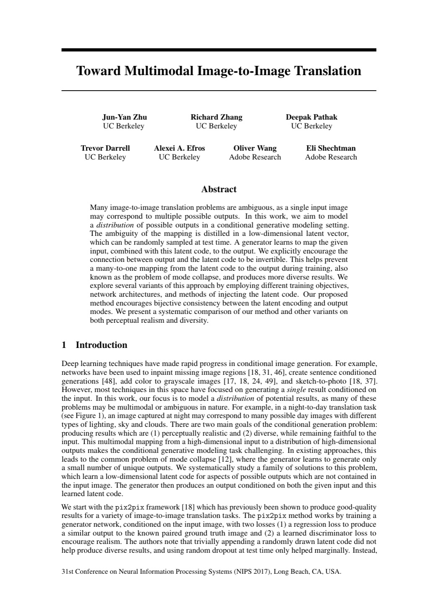
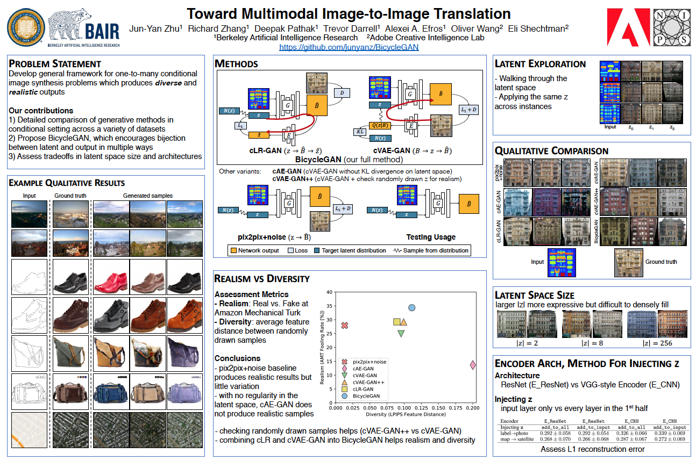

Abstract
Many image-to-image translation problems are ambiguous, as a single input image may correspond to multiple possible outputs. In this work, we aim to model a distribution of possible outputs in a conditional generative modeling setting. The ambiguity of the mapping is distilled in a low-dimensional latent vector, which can be randomly sampled at test time. A generator learns to map the given input, combined with this latent code, to the output. We explicitly encourage the connection between output and the latent code to be invertible. This helps prevent a many-to-one mapping from the latent code to the output during training, also known as the problem of mode collapse, and produces more diverse results. We explore several variants of this approach by employing different training objectives, network architectures, and methods of injecting the latent code. Our proposed method encourages bijective consistency between the latent encoding and output modes. We present a systematic comparison of our method and other variants on both perceptual realism and diversity.
Example Results
 |
| Unsynchronized z [labels → facades] [edges → shoes] [edges → handbags] [night → day] |
| Synchronized z [labels → facades] [edges → shoes] [edges → handbags] [night → day] |
Exploring the Latent Space
 |
Try the BicycleGAN model
 |
|  | J.Y. Zhu, R. Zhang, D. Pathak, T. Darrell, A. A. Efros, O. Wang, E. Shechtman. Toward Multimodal Image-to-Image Translation. In NIPS, 2017. (hosted on arXiv) |
|  |
Related WorkJun-Yan Zhu*, Taesung Park*, Phillip Isola, Alexei A. Efros. Unpaired Image-to-Image Translation using Cycle-Consistent Adversarial Networks. In ICCV, 2017. [PDF] [Website] |
AcknowledgementsWe thank Phillip Isola and Tinghui Zhou for helpful discussions. This work wassupported in part by Adobe Inc., DARPA, AFRL, DoD MURI award N000141110688, NSF awards IIS-1633310, IIS-1427425, IIS-1212798, the Berkeley Artificial Intelligence Research (BAIR) Lab,and hardware donations from NVIDIA. JYZ is supported by the Facebook Graduate Fellowship, RZ by the Adobe Research Fellowship, and DP by the NVIDIA Graduate Fellowship. |